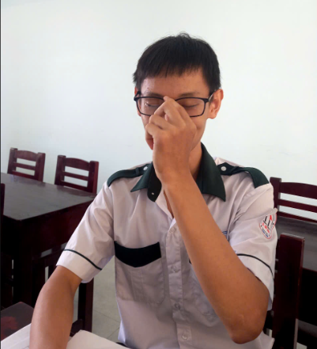

Nguyễn Gia Bảo
Trường Đại Học Bách Khoa HCM
Thủ Khoa đầu vào HSK15 môn Hóa học, rất giỏi, tốt bụng,
chỉ bài bạn rất nhiệt tình, tuy nhiên nhiều lúc hơi nhây,
nói chuyện nhạt quá trời quá đất nhưng không sao phần tốt
ở trên đã bù lại rùi. Mặt khác, bạn còn được xem là "con nhà người ta" trong
mắt các thầy cô và phụ huynh =)))).
Nguyễn Châu Đức Hạnh
Trường Đại Học Ngân Hàng HCM
Cấp 2 gặp mặt rất rén vì bạn khá khó chịu, nhưng sau này giảm nhiều rùi,
là người rất chill trong lớp, thoải mái thì có mà
tức giận cũng có luôn, ngoài học giỏi ra
thì cái gì bạn cũng tốt chỉ là hễ thấy ai pha trò dù hay cỡ nào
cũng bị kêu xàm :))).
Trần Nguyễn Quang Trực
Trường Đại Học Kinh Tế Luật HCM
Người đồng hành cùng với Hạnh vào cuối cấp 3, giỏi
cũng ghê gớm, quan hệ cực rộng và là bon bon
baby shark trong lòng các thầy cô vì thế mà với ai
cũng là bạn, vô đại học điểm toàn trên trời
không à làm tôi pressure quá.
 Đào Phương Cẩm Tú
Đào Phương Cẩm Tú
Trường Đại Học Văn Hiến
...
Trần Nhã Tuyết Nhung
Trường Đại Học Mở HCM
...
Lê Ngọc Trà My
...
Nguyễn Lê Thanh Giang
Trường Đại Học Khoa Học Tự Nhiên HCM
...
Lê Văn Thực
Học Viện Kỹ Thuật Quân Sự HN
Cấp 2 giỏi ác nhất là lúc mới chuyển qua
lớp 7/7, môn gì cũng trong tầm tay kể cả ở cấp 3, tuy hài nhưng
nghiêm túc là nghiêm túc, trải qua quá trình luyện tập
nên rất đô con ngoài ra còn là sếp của
mấy anh em trong lớp nữa.
Phạm Thành Đạt
Trường Đại Học Y Dược TPHCM
Từng là Idol đối với một vài người chung hướng, anh
hướng nội cả năm lớp 10, đi học đem mỗi một cây
bút với một cuốn vở, học Hóa top của lớp, sau này
không biết vì sao anh ấy quay xe 180 độ hướng ngoại hơn nhiều,
giờ chắc làm bác sĩ tài ba rùi.
Hồ Hoàng Minh Khôi
Trường Đại Học Sư Phạm Kỹ Thuật HCM
Ăn mặc mang phong cách riêng nhất là quả "đầu mì tôm"
luôn mang lại ấn tượng cho các bạn xung quanh, học giỏi tấu hài
xong cũng là người có cân nặng khiêm tốn
nhất trong dàn nam sinh lớp luôn ;-;, tuy vậy nhưng so tài
với sinh tố lúa mạch thì anh ấy cân hết!
Lê Đình Phú
Trường Đại Học Kinh Tế HCM
Anh Long của lớp, lúc nào cũng là người chỉ đạo cả đội
làm nhiệm vụ trong tất cả các sự kiện mà lớp tham gia,
hài hước, học giỏi, hát hay đặc biệt "nàng thơ" là ca khúc
như hình với bóng của anh vào những buổi hòa tấu suốt thời học sinh cấp 3.
Là top ca sĩ của lớp đấy!
Trương Thái An
Trường Đại Học Luật HCM
Người không thể thiếu trong bất cứ sự kiện gì của lớp,
chiến thần giao tiếp, chúa tể chill guy, tính tình
thoải mái dễ chịu, hài hước, học không có gì chê. À ngoài ra
còn là người rất thần thái trong các ảnh meme của mình với những kiểu
chụp phong cách khó nói độc lạ :)))) (như bức hình).
Trần Minh Tiến
Trường Đại Học Kinh Tế HCM
Anh zai với các câu nói ẩn ý hài hước, tính tình thoải mái
nhưng cũng hay dễ bực bội, cuộc sống này càng khó anh càng chill
chính vì thế deadline chất chồng nhưng vẫn được xử lý hết từ
đôi bàn tay giỏi giang của anh ấy, bức ảnh trên sẽ chứng minh điều đó :}.
Huỳnh Phan Anh Khôi
Trường Đại Học Kinh Tế HCM
Idol một thời cấp 2, trùm toán đốt cháy, kim loại hay vô cơ
gì gì đó anh đốt hết, tuy hơi daden nhưng không thể che
được hào quang của anh ấy những lúc điềm tĩnh, suy tư. Bên cạnh, deadline cũng chả khác anh sát bên
nhưng anh ấy vẫn có thể giải quyết một cách nhẹ nhàng,
à có lúc quên nộp bài tập xíu xíu thoai -_-.

Phan Minh Đức Phú
...
Tuy không biết anh ấy học trường gì mà chỉ biết sẽ
trở thành một công an, với biệt danh "thầy" thì mọi bài toán anh ấy
đều có thể giải quyết (anh ấy nói vậy á chứ hong phải tui), tuy nhìn hài hài thế thôi
chứ cool ngầu mọi lúc mọi nơi ấy. Đặc biệt còn là người đẹp
trai nhất lớp Sinh K15 nữa chứ, ấy chà chà.
 Nguyễn Cao Kỳ
Nguyễn Cao Kỳ
Trường đại học FPT HCM
Just a normal person.
Nguyễn Võ An Vi
Trường Đại Học Công Nghệ Thông Tin HCM
This guy doesn't have anything to share.
Điền Hòa Khương
Trường Đại Học Khoa Học Tự Nhiên HCM
Là một trong những
anh tài của dàn nam sinh trong lớp,
bên cạnh việc học giỏi
thì tài giao tiếp của anh ấy rất đỉnh. Ngoài ra thì
các trò chơi sau giờ học mà anh thường nghĩ ra
cũng tuyệt vời không kém (rất giải trí với các bạn).
Lê Thanh Nghi
Trường Đại Học Sư Phạm Kỹ Thuật HCM
"Ai eo" chắc phải cao nhất lớp (hiện tại), cực mê các mô hình đồ chơi, xe đua, đặc biệt là robot
có thể lắp ráp cả ngày mà không chán vì thế mà
từ đam mê ấy cùng với sự luyện tập mà anh bạn đã chọn tiếp tục
ngành nghề mơ ước ấy cho sau này.
Nguyễn Thanh Hoàng Long
Trường Đại Học Giao Thông Vận Tải HCM
Anh zai thầm lặng, luôn luôn lặng lẽ cũng tìm kiếm câu chuyện đúng sở thích từ các chủ
để trao đổi của các bạn, đến khi thấy thì chắc chắn nhóm đó sẽ +1 người để cùng tranh luận
(dù kĩ năng bắt chuyện của anh ấy không được tốt).
Phan Quốc Huy
Trường Đại Học Kinh Tế HCM
Kỹ năng ngoại giao của bạn rất đỉnh, từ trai gái
gì hễ gặp đều là bạn, hài hước, thoải mái, vui vẻ
nên ai cũng quý, học rất chăm, cày đề đến nổi thấy luôn khuôn trăng
dưới mắt, đúng là biệt danh "gấu trúc" chắc cũng từ đây mà ra.
Bạch Dương Thi
Trường Đại Học Khoa Học Tự Nhiên HCM
Nói về vui tươi nhất trong lớp thì điểm danh bạn đầu tiên liền, phong cách
thoải mái, học giỏi, khuôn mặt sáng suốt toát lên vẻ tự tin của
một người chuyên Sinh, là cựu đội tuyển Sinh và đây cũng chính là ngành học mà bạn chọn để theo
đuổi trong tương lai.
Võ Quốc Thịnh
Trường Đại Học Y Dược TPHCM
Mới đầu gặp thì bạn rất nghiêm túc nhưng lại vô cùng thân
thiện khi được bắt chuyện, học giỏi, vui vẻ và
đặc biệt trong các nhóm chơi trong lớp thì bạn là người
tạo tiếng cười nhiều nhất cho các thành viên, là người
hướng nội nhiều hơn hướng ngoại.
Lê Nguyễn Tường Vân
Arkansas State US
Bạn cao nhất nhóm các bạn nữ trong lớp, tính tình vui vẻ,
sở trường hội họa, học không kém gì các bạn trên và
từng là thành viên đội tuyển môn Sinh học. Ngoài
chuyện công việc, bạn bè thân thiết ra thì bắt chuyện
với bạn ấy hẳn là một thử thách khó phết á.
Phạm Thị Ny
Trường Đại Học Quốc Tế Miền Đông
Một người chăm chỉ làm việc, nói về
kinh doanh thì chắc trong lớp không ai qua nổi bạn
này, học thì giỏi dễ sợ vì dồn thời gian cho công
việc mà học tập trên lớp vẫn giỏi vẫn xuất sắc như thường.
Nguyễn Hồ Bảo Ngân
Trường Đại Học Kinh Tế HCM
Bạn là một phần quan trọng trong đội tuyển, ham học hỏi, chăm chỉ nằm trong top
lớp rùi, trầm tính và là người hướng nội, rất vui vẻ với những phút
giây bên người (bạn) thân thiết.
Lê Minh Định
Trường Đại Học Sư Phạm HCM
Lớp trưởng của lớp, hòa đồng, vui vẻ, giỏi giang, là người hướng tùm lum vì
nhiều lúc suy nghĩ rất nhiều đến nổi tóc mọc không nổi luôn mà,
có nhiều suy tư nhưng ít chia sẻ, rất thân thiện và cũng nhiều lần tham gia nói
chuyện hài hước như những người khác.
Ngô Vũ Phương Linh
Trường Đại Học Giao Thông Vận Tải HCM
Người vui vẻ, học giỏi, thích chụp ảnh đặc biệt là cảnh bình yên,
cảnh đẹp, chill, kĩ năng chụp thì khỏi phải bàn rùi.
Ngoài ra, bạn còn là một người cực kì năng lượng trong
cuộc sống có thể thấy thông qua những bức ảnh của bạn, sống thoải mái, an nhiên
rất đáng học hỏi.
Lương Thị Nhã Trâm
Trường Đại Học Kinh Tế HCM
Một người vô tư, yêu đời, enjoy tất cả moments mà bạn tham gia
. Năng lượng tích cực của mình luôn đem lại niềm vui đến mọi người.
Các sự kiện của lớp không thể thiếu bạn vì sẽ bị giảm đi
50% độ hài hước của lớp. Những yếu tố trên giúp bạn có mối quan hệ
rất rộng trong trường.
Nguyễn Thị Quỳnh Trân
Trường Đại Học Khoa Học Xã Hội và Nhân Văn
Một trong ba chị đại của lớp, năng lượng, điềm tĩnh,
học giỏi nhưng nhiều lúc cũng trầm lắng suy tư về cuộc đời,
cũng từng là cựu đội tuyển Hóa cấp 2 và 3 mà vì thế có lẽ
bạn đã không chọn Hóa là con đường cho sau này (đỡ bị bào :D).
Phạm Huỳnh Yên Đan
...
Là cựu thủ khoa môn Sinh thi đầu vào của lớp ta,
Lúc nghe bạn nói là học trường đại học gì gì bên US á mà quên rùi sorry,
năng lượng thì bạn này quá trời, yêu đời, tốt bụng,
tích cực tình nguyện giúp đời khi có thời gian, giờ thì
bạn đã qua Mỹ lại rùi, hẹn ngày tái ngộ.
Trần Nguyễn Phương Thoa
Trường Đại Học Sư Phạm HCM
Mãnh mẽ và giỏi giang chắc là 2 thứ rất đúng với bạn,
học giỏi không chùn bước trước mọi khó khăn trong cuộc sống,
luôn tạo những trận cười vui vẻ cho các nhóm bạn
từ khiếu hài hước độc lạ của mình.
Đổng Năng Lượng
...
Hiện tại chắc chưa tốt nghiệp vì anh ấy mới du học, là
một captain chính hiệu của lớp trong mọi sự kiện, chiến
thần bóng rổ, học giỏi và đặc biệt rất đam mê tiếng anh,
qua Mỹ thì chắc chắn speaking và vocab phải lên vù vù,
mong sau này gặp lại giao lưu tí var nhờ :)))).
Lý Đặng Kha Nghi
Trường Đại Học Y Dược HCM
...
Nguyễn Quỳnh Tuyết Ngân
Trường Đại Học Khoa Học Xã Hội và Nhân Văn
...